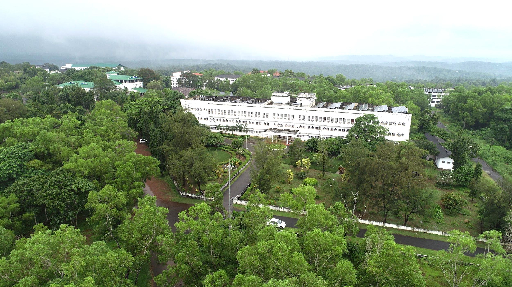

University of Calicut (UoC), the largest University in Kerala in terms of the expanse, affiliated colleges and the number of degrees awarded was established in the year 1968.It is the second University to be started in Kerala. The University caters to the educational requirements and aspirations of the youth in Malabar region, comprising of some of the educationally backward districts of the state.‘Nirmaya Karmana Sree’ being the motto ,which denotes "prosperity will be generated through pure actions", UoC has been able to surmount all challenges and has emerged as the largest residential cum affiliating University in Kerala, with 34 post-graduate Departments and 406 affiliated colleges. It is governed by Calicut University Act 1975, passed by the Legislative Assembly of Kerala. Recently the University celebrated its Golden Jubilee and the slogan of the celebrations was “University to Society”.
The University campus located at Tenhipalam, 24 km south of the city of Kozhikode is the main hub of academic activities. The Office of the Vice Chancellor, the Administration Block, the Pareeksha Bhavan, School of Distance Education, 31 Teaching Departments, UGC HRD Centre, Educational Multimedia Research Centre, the CHMK University Library, the Central Science Block and the guest houses are situated in the main campus.
The UoC campus is spread over an area of 520 acres of land. The total built up area of the building constitutes 2,01,918.25 m2. The departments on the main campus include Arabic, Botany, Biotechnology, Women Studies, Chemistry, Commerce and Management Studies, Computer Science, Education, English, Hindi, History, Political Science, Mass Communication and Journalism, Life Science, Library and Information Science, Malayalam and Kerala Studies, Mathematics, Nanoscience and Technology, Philosophy, Physics, Physical Education, Psychology, Russian and Comparative Literature, Sanskrit, Folklore Studies, Statistics, Zoology, Environmental Science, Geology, Sociology and Law. Science departments have common and specialized laboratories with the latest equipment. The common academic support facilities include CSIF(Centralised Sophisticated Instrumentation Facility), museum, animal house, botanical garden, park, observatory, manuscript library etc. All the 34 Departments have KOHA-enabled automated domain specific academic libraries. ICT facilities are available in the classrooms and seminar halls.
The University has two off campus centres-Dr. John Matthai Centre , popularly known as JMC, a Centre for Teaching and Research in Economics at Thrissur and ITSR, a centre specifically for tribal empowerment, located in the Western Ghats, Wayanad.Besides these two centres, there are self-financing centres situated at different locations within its jurisdiction. Information Centres have been set up in all the five districts of our jurisdiction to facilitate better access to students.
UoC has well-established sports facilities including Asia's largest natural stadium having one kilometer circumference. This stadium is equipped with floodlights and large pavilions, galleries of one lakh seating capacity, athletic tracks, synthetic tracks, two grass football fields, which boasts of commendable international standards. Sports facilities include indoor stadium, gymnasium, health and fitness centre, yoga centre, handball court, Kho Kho ground, handball court, tennis court and international standard swimming pool. These facilities provide a conducive physical condition for helping nurture world class sports personalities. UoC has been instrumental in bringing out a number of sporting heroes and heroines who has won many prestigious honours including four Padmasrees (Dr.P.T.Usha, M.D.Valsamma, Anju George and Late Jimmy George), Rajiv Gandhi Khel Ratna (Anju George), Dronacharya Award (Robert Bobby George) and 14 Arjuna Awardees. Recently in the year 2020-21, the UoC team has won the All India Inter University championship in football, volleyball, baseball etc.
To meet the challenges of the changing world, the University is offering both conventional and advanced programmes of studies and research. Innovative activities practiced in University include administration through E-Governance, computerization of examinations, establishment of smart classrooms for effective learning process, modernization of laboratories and frontier lectures by renowned scholars and scientists.
To meet the challenges of the changing world, the University is offering both conventional and advanced programmes of studies and research. Innovative activities practiced in University include administration through E-Governance, computerization of examinations, establishment of smart classrooms for effective learning process, modernization of laboratories and frontier lectures by renowned scholars and scientists.
Of the 406 colleges affiliated to the University, 107 are located in Kozhikode District, 78 in Thrissur District, 126 in Malappuram District, 78 in Palakkad District and 17 in Wayanad District. Inclusive growth towards excellence,providing opportunities to the most underprivileged and marginalized in our society is the primary goal of the University. As one of the oldest University of Kerala, University of Calicut can proudly proclaim that it has provided the impetus to the economic growth of the region.